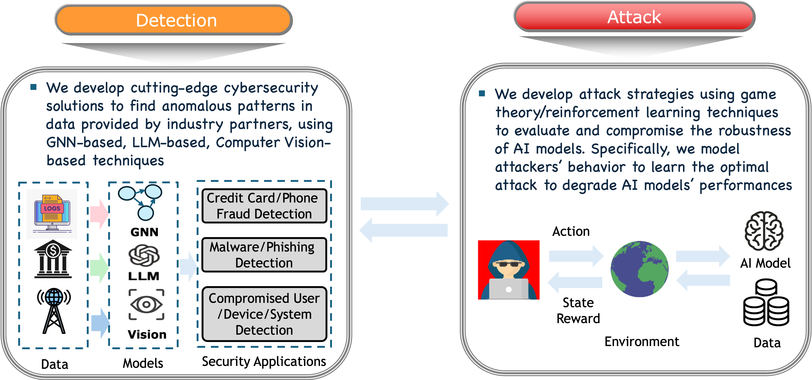

We work on various topics in data-driven network and cyber security. In the ever-evolving cyber threat landscape, we are dedicated to developing cutting-edge cyber security solutions for recent cyber threats. Defender models should account for potential attacks to enhance their robustness. We thus study the cybersecurity lifecycle. How can we attack the given model and evade detection? How can we protect our system against threats? Recent research topics include security in federated learning, compromised entity detection in mobile networks and enterprise logs, malicious domain detection, phone fraud, spam detection in online forums, and attack/defenses against machine learning models. We are always looking for highly motivated students who are passionate about data-driven cybersecurity research. If you are interested in our group, read this instruction.
Graduate Students
Kushankur Ghosh (with Joerg Sander), PhD Student, Winter 2024 - Present, Homepage
Wenhao You, MSc Student (University of Waterloo), Fall 2024 - Present
Mark Holmstrom, MSc Student, Winter 2024 - Present
Undergraduate Students
Mehar Klair, Undergraduate Student, RA, Spring 2025 - Present
Kashish Gupta, Undergraduate Student, RA, Spring 2025 - Present
RA
Negar Mirgati, RA (Received MSc. from UA), Spring/Summer 2025
Graduate Students
Abdullah Al Omar (with Omid Ardakanian), MSc Student, Winter 2023 - Fall 2024, Homepage
MSc Thesis: "Efficient Privacy-Preserving Cross-Silo Federated Learning with Multi-Key Homomorphic Encryption"
Undergraduate Students
Kian Kyars, Undergraduate Student, Fall 2024 - Winter 2025
Prateek Annam, Undergraduate Student , Fall 2023 - Fall 2024
Wenhao You, Undergraduate Student, Winter 2024 -> MSc student at University of Waterloo
RA
Kian Kyars, RA (Received B.Sc. from UA), Spring 2025
Anisha Sethumadhavan, RA (Received B.Sc. from UA), Winter 2024